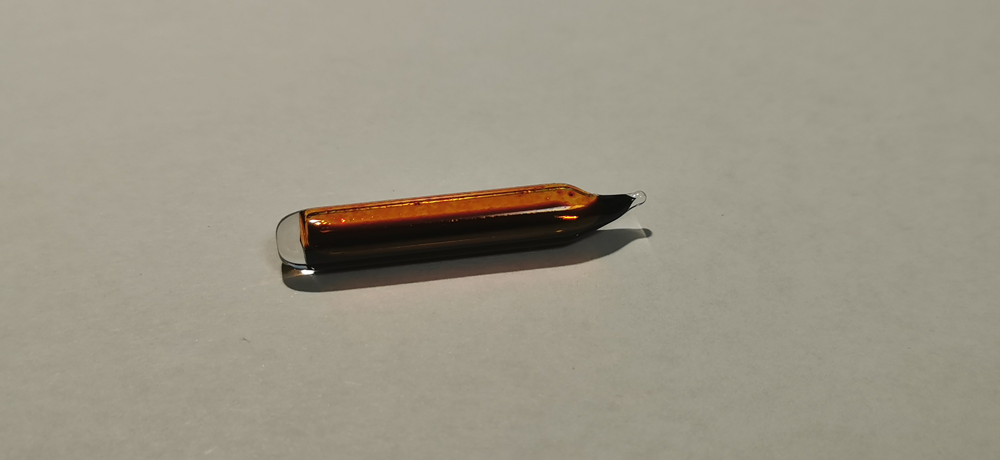
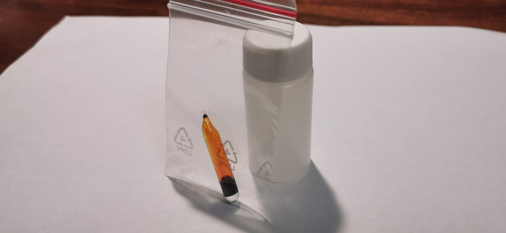
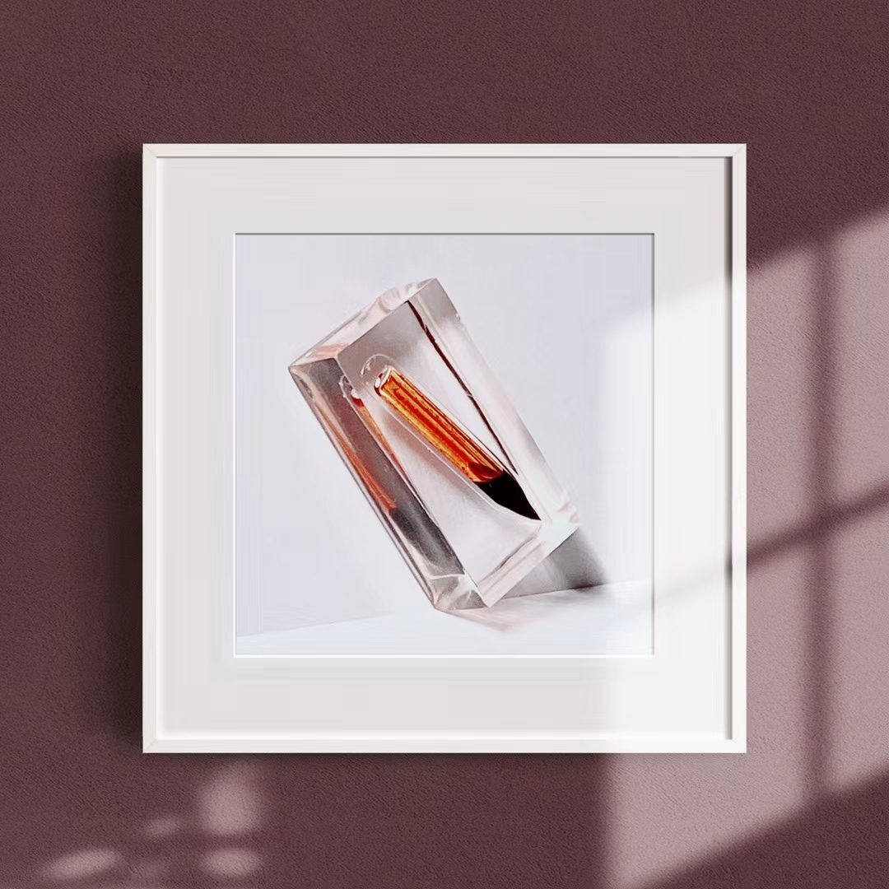

溴
2020.2 袖珍液溴 99% 来自Onyxmet   
溴：溴在室温下是深红棕色（reddish-brown）液体，沸点58.78℃，易挥发。卤素一族的氟是淡黄绿色气体，而碘是黑色固体，整族的颜色由上至下呈现明显的加深趋势。
Onyxmet：Onyxmet是来自波兰的元素厂商，主要以金属单质样品闻名，国内很多收藏者在其店铺购买过元素样品。据悉，冥灵店铺上架的液氯也是其在Onyxmet批量购买的。由于2020年新型冠状病毒肺炎的传播，海外交易十分困难，Onyxmet的老板Tom时刻关注疫情和快递局势，预测能发货的日期并经常告知我，即使这一订单持续了四个月，老板仍然十分贴心，大赞Onyxmet，辛苦您了！
本样品于2020.6.18赠予高中同学pwj，图3为返图。